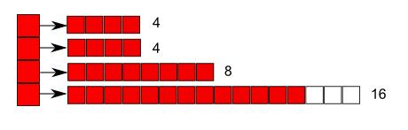

List as a dynamic array of increasing-sized arrays
Introduction
The most common data structures used for lists are linked lists and dynamic arrays.
- Linked lists require following pointers for traversal (poor locality of reference), and have O(n) indexed access.
Adding and removing elements require large numbers of small allocations and deallocations of memory.
- Dynamic arrays have efficient traversal (good locality of reference) and indexed access is O(1).
Adding elements requires reallocation when full, however, which involves copying elements.
Instead, I am going to propose a structure consisting of a dynamic array of increasing-sized arrays.

Each array after the first two is twice the size of its predecessor.
This means that the structure has the same allocation strategy as a dynamic array (double when full).
As new arrays are appended to the end, no copying is required.
The regular increase in the size of the arrays makes indexed access efficient.
It is not efficient to insert elements anywhere other than at the tail in this design, since addition before the tail requires block shifts in the array to which the element is added, and all subsequent arrays.
Creation and deletion
Create a list with MBblocklist_create.
Delete with MBblocklist_delete.
Adding elements
Add at the tail with MBblocklist_add_tail.
Removing elements
Remove from the tail with MBblocklist_remove_tail.
Accessing elements
Access elements by array index using MBblocklist_get_at and MBblocklist_set_at.
Iterate over all elements with MBblocklist_for_each.
Get an iterator over the elements with MBblocklist_iterator.
Example program
#include <stdio.h>
#include <blocklist.h>
int main(void)
{
char *elements[] = {"A", "B", "C", "D", "E", "F"};
const unsigned int n = sizeof(elements) / sizeof(const char*);
MBblocklist * list;
unsigned int i;
char * data;
MBiterator * iterator;
list = MBblocklist_create();
for (i = 0; i < n; i++) {
MBblocklist_add_tail(list, elements[i]);
}
data = MBblocklist_set_at(list, 2, "X"); /* Change "C" to "X" */
printf("Replaced %s\n", data);
data = MBblocklist_remove_tail(list); /* Remove "F" */
printf("Removed %s\n", data);
MBblocklist_set_at(list, MBblocklist_get_count(list), "Y"); /* Same as MBblocklist_add_tail */
printf("List contains:\n");
/*MBblocklist_for_each(list, (MBforfn)puts);*/
iterator = MBblocklist_iterator(list);
while ((data = MBiterator_get(iterator))) {
puts(data);
}
MBiterator_delete(iterator);
MBblocklist_delete(list);
return 0;
}
Source code